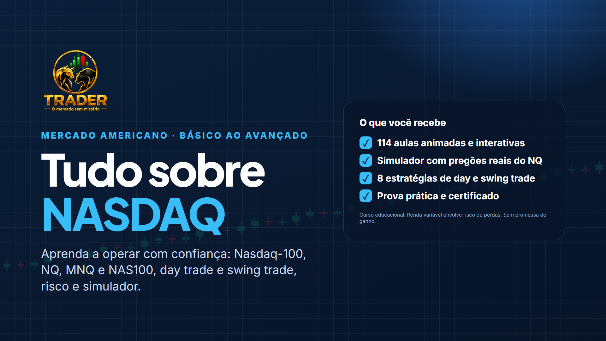

114 aulas animadas e interativas, com dados reais do Nasdaq-100 e do NQ. Do que é um índice até um plano operacional escrito: NQ, MNQ e NAS100, gráficos, estratégias de day trade e swing trade, gestão de risco em dólar e um simulador com pregões reais para treinar antes do dinheiro real.

O curso começa pelos números. Cada ponto tem um valor em dólar, e o tamanho do contrato decide se uma queda é uma lição ou um rombo na conta.
por ponto no NQ, e US$ 2 no MNQ, o micro: o mesmo movimento com dez vezes menos risco.
CME Group, especificações dos contratosfoi a maior queda diária do NQ nos dados do curso (05/11/2026): −1.814,75 pontos, ou −US$ 36.295 num único NQ.
NQ=F diário, Yahoo Finance · aula 0.3de compra ou venda. Você aprende a montar e testar as próprias regras, com stop e risco definidos antes da entrada.
Curso educacional · sem promessa de ganhoNasdaq-100 × Composite, as empresas que movem o índice, juros, notícias e o relógio de Nova York em horário de Brasília.
NQ, MNQ e NAS100 lado a lado: tick, valor do ponto, margem, rolagem, spread e swap, sem misturar os produtos.
Candles, zonas, estrutura, price action, volume, VWAP e indicadores, com 5 estratégias de day trade e 3 de swing trade.
Risco por operação em dólar, tamanho da posição, limite diário, drawdown, psicologia e um plano escrito.
Clique em cada módulo para ver as aulas. No fim: prova final e certificado.
Cada aula é uma sequência de telas animadas que avançam a cada clique, com o texto da explicação e testes no meio do caminho.
Tenho 45 anos e acompanho e estudo o mercado financeiro todos os dias. Há 8 anos opero day trade, no Brasil e no exterior. Nesse tempo, aprendi na prática que o mercado não perdoa improviso: o que sustenta um trader é método, gestão de risco e disciplina — e não promessa de ganho rápido. É isso que eu ensino aqui, do jeito que eu gostaria de ter aprendido quando comecei.
à vista no Pix ou em até 12x no cartão
Não. A primeira etapa (módulos 0 a 5) começa do zero: o que é o mercado, um índice, um contrato futuro e um candle.
NQ e MNQ são contratos futuros da CME (US$ 20 e US$ 2 por ponto). NAS100 ou US100 é um CFD, oferecido por corretoras, com regras e custos que mudam de uma para outra. O módulo 3 compara os três e ajuda a escolher.
Para estudar, não: o curso usa o simulador e a conta demo. Antes do dinheiro real, você aprende quanto cada contrato exige de margem e quanto pode perder por operação.
O curso não promete resultado. Cada estratégia é testada em dados reais na própria aula, com custos, e o curso mostra quando a amostra ainda é pequena demais para concluir. Resultado passado não garante resultado futuro.
O pregão regular vai das 9h30 às 16h de Nova York; os futuros quase 24 horas. O curso converte tudo para Brasília, inclusive nas semanas em que o horário de verão dos EUA muda a diferença.
O acesso é vitalício.
Depois da compra, você entra na Área do aluno do site com o e-mail da compra e o seu CPF. As aulas funcionam no computador e no celular.
Sim. No módulo 20: prova com 40 questões (aprovação com 70%), prova prática no simulador e estudo de caso.
Aviso de risco. Curso de finalidade exclusivamente educacional. Não é recomendação de investimento. Operar futuros e CFDs, com alavancagem, envolve risco alto e pode gerar perdas maiores que o valor depositado em margem. Resultados passados, inclusive os testes do curso, não garantem resultados futuros.